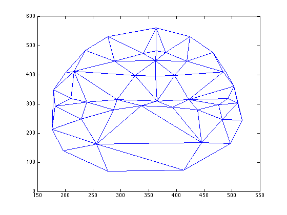
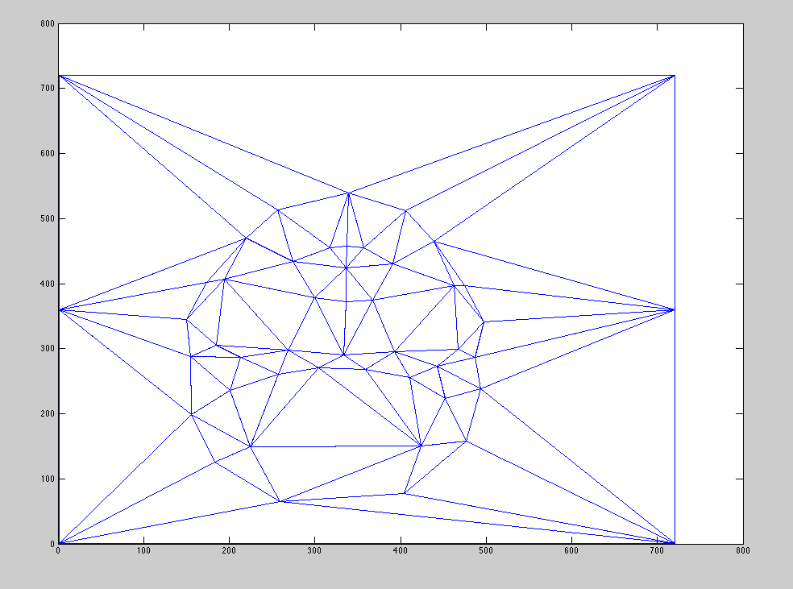

Pour le morphage de visage, j'ai suivi le plan suggéré par l'énoncé en implantant la fonction morph prenant en paramètres, 2 images et leurs correspondances de points, une structure de triangulation et 2 paramètres qui opèrent lors de la transition de
l'image1 vers la suivante. De manière synthétique, voici comment mon algorithme procède:
1.Initialisation de certaines structures
2.Calcul du point intermédiaire entre l'image 1 et l'image 2 selon le warp_frac de l'itération en cours
3.Trouver les appariments de la triangulation avec mytsearch
4. Pour chaques triangles:
4.1 Trouver la transformation de l'image 1 vers l'image intermédiaire
4.2 Trouver la transformation de l'image 2 vers l'image intermédiaire
4.3 Appliquer la transformation sur les éléments trouvés par mytsearch
5. Interpoler la valeur des pixels avec interp2 et selon dissolve_frac
Triangulation
La triangulation calculée est une triangulation de Delaunay. L'intérêt de cette méthode est qu'elle maximisent le plus petit angle de l'ensemble des triangles ce qui permet d'éviter les triangles allongés. (Wikipedia - Triangulation de Delaunay)
Optimisation
Pour arriver à de meilleurs résultats, j'ai ajouté des points à ceux fournis avec les images à utiliser. Cela permet de couvrir toute l'image et d'avoir un résultat plus intéressant lors du morphage.
Améliorations possibles
Pour être encore plus efficace, il aurait fallu ajouter davantage de points de correspondances. En effet, de cette manière, les zones translatées et morphées vers de nouvelles zones seraient plus compactes. Au coup d'oeil, ce serait assurément plus intéressant
encore! N'empêche que la méthode est déjà plutôt efficace. Je trouvais même que je ressemblais pas mal à mon accolyte vers qui je me transformais.


Originaux
Évolution
Visage moyen
Algorithme
Pour calculer le visage moyen de la classe, j'ai réutilisé mon code de morphage après avoir fait certaines opérations. Dans l'ordre:
1. Calcul des positions moyennes (boucle sur tous les fichiers de correspondances de points)
2. Migration de toutes les images vers les positions moyennes calculées
3. Moyenne des images déplacées vers les correspondances moyennes
J'ai mis les paramètres warp et dissolve à des valeurs respectives de 0.5 et 0 pour aller chercher le résultat attendu à l'étape 2. Un résultat interprétable ne fut pas obtenu du premier coup, ce que montre d'ailleurs les images des tentatives
de départ. Le résultat final montre quelque chose de possible. Un humanoïde de sexe masculin, puisqu'il n'y a pas assez de filles dans notre classe! Les cheveux semblent courts et foncés, avec une barbe moyenne, ou devrais-je dire, une moyenne
de barbes. Sinon, les lunettes semblent apparentes de même que des vêtements foncés.
Du côté des tentatives personnelles, j'ai tenté de me transformé en chien. Les gens disent parfois que les chiens ressemblent à leur maître. Avoir un chien ce serait un Border Collie. Alors si les gens on raison, ce chien devrait me resembler! J'ai tenté
le coup avec mon algorithme pour voir.
{kind=link}
{kind=link}
{kind=link}
{kind=link}
{kind=link}
{kind=link}
{kind=link}
{kind=link}
{kind=link}
{kind=link}
{kind=link}
{kind=link}
{kind=link}
{kind=link}